Cursos de econometria em séries de tempo às vezes omitem o uso de MQO num contexto de séries de tempo. Neste post discuto um pouco da teoria e de aplicações no R.
econometria
time-series
repost
tutorial-R
Author
Vinicius Oike
Published
January 1, 2019
Introdução
[Este post foi originalmente escrito no início de 2019. Muitos dos pacotes apresentados aqui evoluíram bastante, mas acredito que o post original ainda tenha bastante valor didático para quem está iniciando seus estudos em econometria e R.]
Os cursos de econometria de séries de tempo, usualmente, começam pelo ensino de modelos lineares univariados para séries estacionárias. Estes modelos são da família ARMA e tentam representar uma série de tempo \(y_{t}\) em função de suas defasagens \(y_{t-1}, y_{t-2}, \dots, y_{t-n}\) e de choques aleatórios (inovações) \(\epsilon_{t}, \epsilon_{t-1}, \epsilon_{t-2}, \dots, y_{t-n}\). Contudo, pode ser mais interessante relacionar duas séries de tempo \(y_{t}\) e \(x_{t}\) diferentes via um modelo linear. Em alguns casos isto pode ser equivalente a um VAR ou VARMA, mas o modelo linear tem a vantagem de ser mais simples de implementar e de interpretar. O tipo de modelo linear que estamos interessados é da forma
\[
y_{t} = \beta_{0} + \beta_{1}x_{t} + w_{t}
\]
onde \(y_{t}\) é a série que queremos “explicar” em função da série \(x_{t}\). É evidente que podemos estender este modelo para incluir defasagens das variáveis \(x_{t}\) e \(y_{t}\), além de incluir outras séries, dummies, efeitos sazonais e tendências temporais.
Quando se usa dados em forma de séries de tempo numa regressão linear, é bastante comum que se enfrente algum nível de autocorrelação nos resíduos. Uma das hipóteses do modelo “clássico” de regressão linear é de que as observações são i.i.d., isto é, que os dados são independentes e identicamente distribuídos. Isto obviamente não se aplica no contexto de séries de tempo (os dados não são independentes), então é preciso algum cuidado no uso de modelos de regressão linear. Neste sentido, o diagnósito dos resíduos é o mais importante passo para verificar a qualidade do modelo. Idealmente, os resíduos do modelo devem se comportar como ruído branco (i.e., não devem apresentar autocorrelação).
Outro problema típico deste tipo de análise, chamado de “regressão espúria”, acontece quando se faz a regressão de séries não-estacionárias. Quaisquer duas séries com tendência serão fortemente linearmente relacionadas. Isto leva a uma regressão com \(R^2\) altíssimo e estatísticas-t muito significativas e a vários modelos sem sentido. Exemplos disto podem ser vistos neste site (em inglês).
Ainda assim, há casos em que podemos utilizar estas regressões para encontrar relações úteis. Em particular, se as séries forem cointegradas podemos usar uma metodologia Engle-Granger. Esta abordagem não será discutida neste post.
Pacotes
Code
# Bases de dadoslibrary("AER")library("astsa")library("GetBCBData")# Funções para séries de tempolibrary("forecast")library("tseries")library("dyn")# Funções para facilitar a manipulação de dados com dataslibrary("xts")library("lubridate")# Visualizaçãolibrary("ggplot2")
Exemplo: PIB e Consumo
Como primeiro exemplo vamos analisar a variação do PIB. A base de dados USMacroG é um conjunto de 12 séries macroeconômicas dos EUA, disponibilizadas pelo livro de econometria do Greene. Como as séries do PIB e do consumo estão em nível precisamos fazer alguma transformação para convertê-los em taxas percentuais. O importante do código abaixo é notar o uso da função ts.instersect que serve para emparelhar as séries e transformá-las em colunas de um data.frame. O modelo que queremos estimar relaciona as variações do PIB com as variações do consumo da seguinte forma.
onde \(\Delta\) representa a variação percentual, isto é, \(\Delta x_{t} = \frac{x_{t} - x_{t-1}}{x_{t-1}}\). Para estimar o modelo uso a função lm. A saída abaixo é essencialmente idêntica à de uma regressão linear de dados em cross-section.
Como há apenas duas séries podemos visualizar a sua relação num gráfico de dispersão ou mesmo num gráfico de linha.
Code
# Scatterplotplot(pib ~ cons, data = dados)# Linha de regressão em vermelhoabline(coef(fit), col ="red")
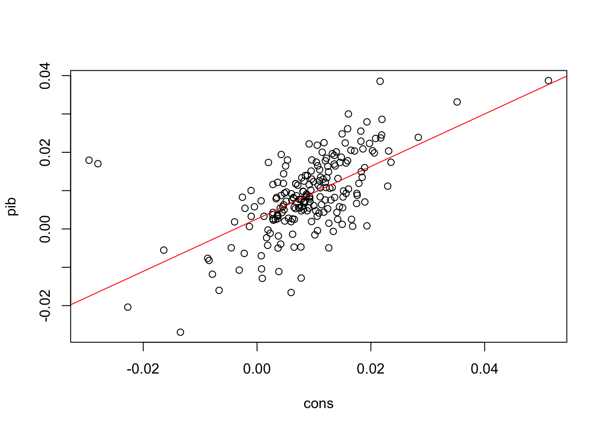
Code
# Gráfico de linhaplot.ts(pib)lines(cons, col ="red")legend("topright", legend =c("PIB", "Consumo"), col =1:2, lty =1)
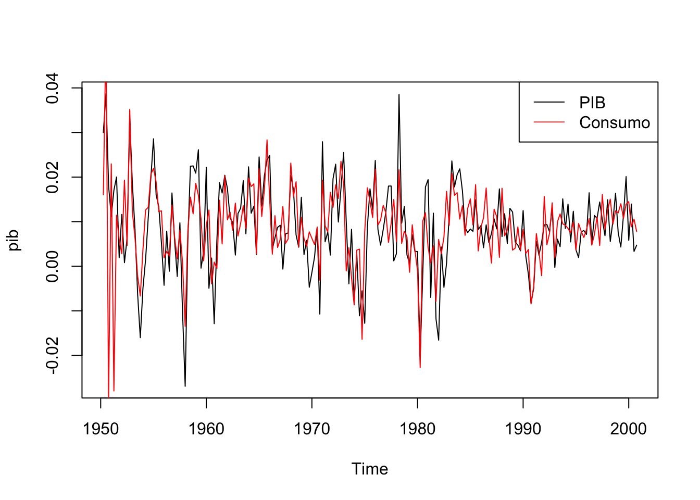
Ainda que práticas, as funções base do R para visualização não são muito elegantes e há vários pacotes que oferecem opções mais interessantes. O popular pacote ggplot2, em particular, foi atualmente integrado ao pacote forecast nas funções autoplot e autolayer.
Code
ggplot(dados, aes(x = cons, y = pib)) +geom_point() +geom_smooth(method ="lm", se =FALSE)
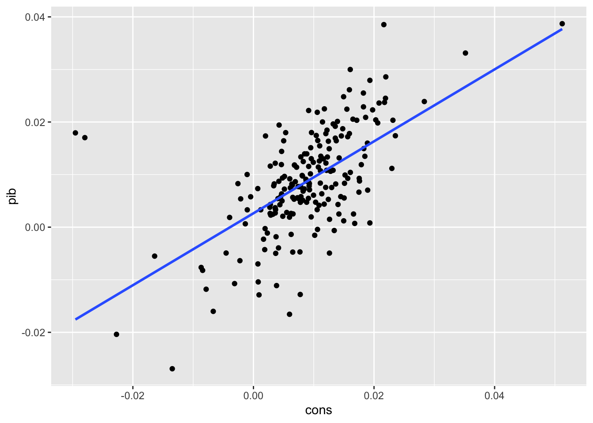
Code
autoplot(pib) +autolayer(cons) +theme_light()
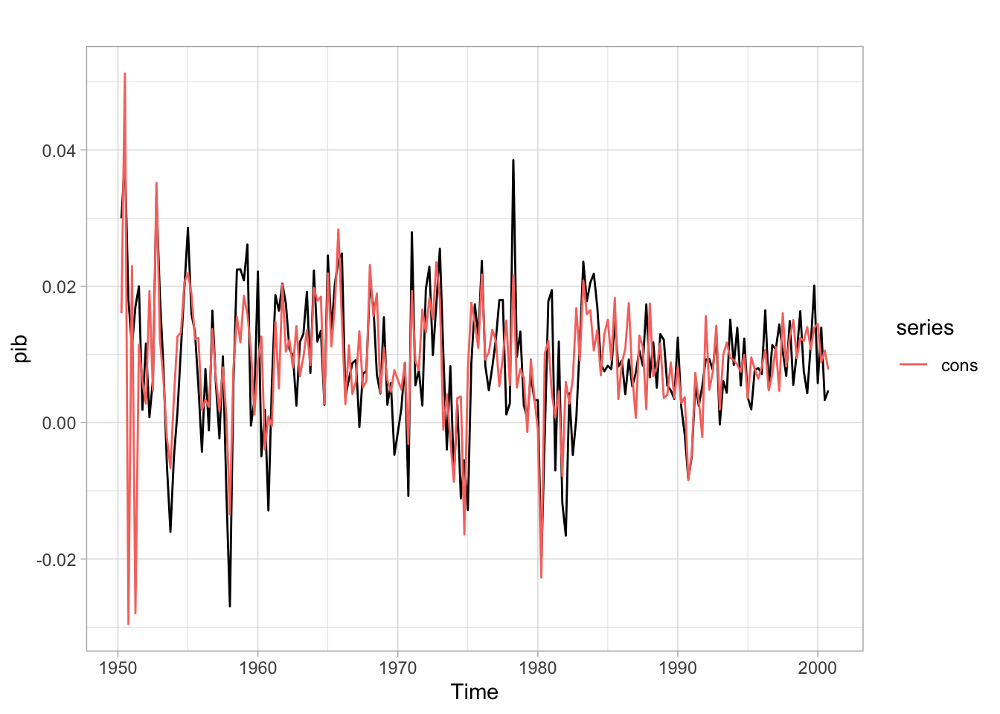
É sempre importante verificar a presença de autocorrelação nos resíduos do modelo - este problema é especialmente presente em contextos de séries de tempo.
Code
u <-resid(fit)
Code
forecast::ggAcf(u)forecast::ggPacf(u)
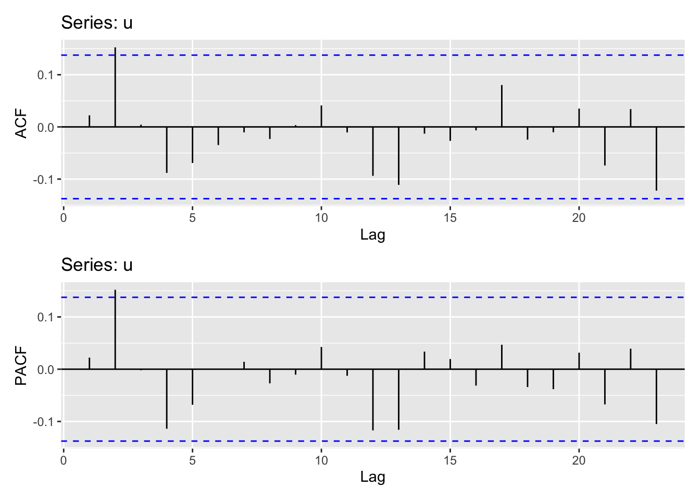
Neste caso parece não haver grande problema já que a maior parte das autocorrelações estão dentro do intervalo de confiança (com exceção do segundo lag). Há testes mais formais, como o Breusch-Godfrey ou Ljung-Box, para verificar a presença de autocorrelação nos resíduos de um modelo. Em ambos os casos, queremos testar se os resíduos do modelo se comportam como ruído branco e, idealmente, queremos não-rejeitar a hipótese nula (isto é, busca-se um p-valor “grande”).
O teste BG está implementado no pacote lmtest que é carregado automaticamente junto com o pacote AER. Ele essencialmente faz uma regressão linear entre os resíduos do modelo com defasagens da variável explicada (\(y\)) e dos próprios resíduos e verifica se os coeficientes estimados são significativos (diferentes de zero). O código abaixo mostra como fazer o teste para a segunda ordem.
Breusch-Godfrey test for serial correlation of order up to 2
data: fit
LM test = 4.8858, df = 2, p-value = 0.08691
A tabela abaixo reporta o valor do teste para diversas ordens. Como se vê, não há evidências de que exista correlação serial nos resíduos do modelo. Caso houvesse autocorrelação, uma saída seria modelar os resíduos como um processo ARMA e estimar o modelo conjuntamente por máxima verossimilhança. Isto é, seria um modelo de regressão linear com erros ARMA.
Ordem da defasagem
Estatística LM
p-valor
1
0.1074866
0.7430239
2
4.8857641
0.0869100
3
4.8859138
0.1803443
4
7.3978074
0.1163009
5
8.3037142
0.1402726
6
8.3038739
0.2166753
7
8.3473089
0.3029668
8
8.4821106
0.3878461
9
8.5054023
0.4841218
10
8.8502628
0.5463708
11
8.8803034
0.6329399
12
11.6353655
0.4753901
Também seria importante verificar se as séries das variações trimestrais do PIB e do consumo são estacionárias. Caso elas não fossem, os resultados da regressão provavelmente seriam espúrios e mesmo os seus resíduos teriam sido contaminados. Contudo, em geral, quando tiramos a diferença percentual de uma série ela se torna estacionária, então deixo esta questão de lado.
Decomposição de tendência e sazonalidade
Pode-se propor um modelo linear que separa efeitos de tendência e sazonalidade da seguinte forma:
\[
y_{t} = T_{t} + S_{t} + u_{t}
\]
onde \(T_{t}\) é uma componente de tendência (em geral, um polinômio ou média móvel) e \(S_{t}\) é um componente sazonal. Talvez a forma mais simples deste modelo seja assumir uma tendência linear e incluir dummies sazonais.
Para facilitar a notação a equação acima assume dados mensais, onde \(d_{k}\) é uma variável dummy igual a \(1\) quando a observação for referente ao mês \(k\). Isto é, \(d_{2} = 1\) quando os dados forem do mês de fevereiro, logo, \(\alpha_{2}\) captura o efeito marginal do mês de fevereiro. Não se pode colocar uma dummy para cada mês pois haveria um problema de singularidade na matriz de regressores, mas é claro que quando o dado for do mês de janeiro, todas as dummies terão valor igual a zero.
Temos duas opções para montar a variável \(t\) : pode-se usar a função time(x) se x for um objeto da classe ts ou, de maneira mais geral, pode-se usar a função seq_along(x).
Code
gdp <- d[, "gdp"]time_trend <-seq_along(gdp)fit <-tslm(gdp ~ time_trend)
Dependent variable:
PIB
t
35.236***
(0.449)
constante
950.919***
(53.065)
Observations
204
R2
0.968
Adjusted R2
0.968
Residual Std. Error
377.571 (df = 202)
F Statistic
6,161.458*** (df = 1; 202)
Note:
p<0.1; p<0.05; p<0.01
O gráfico abaixo mostra o ajuste com a linha de tendência em vermelho. Fica claro que os dados nas extremidades da série fogem bastante da tendência. Isto pode tanto ser indício de um mau ajuste, como de que o crescimento recente foi “acima da tendência”.
Code
autoplot(gdp) +autolayer(fitted(fit)) +scale_color_discrete(name ="", label ="Tendência Linear") +labs(title ="PIB (tendência linear)", x ="", y ="") +theme_light() +theme(legend.position ="bottom")
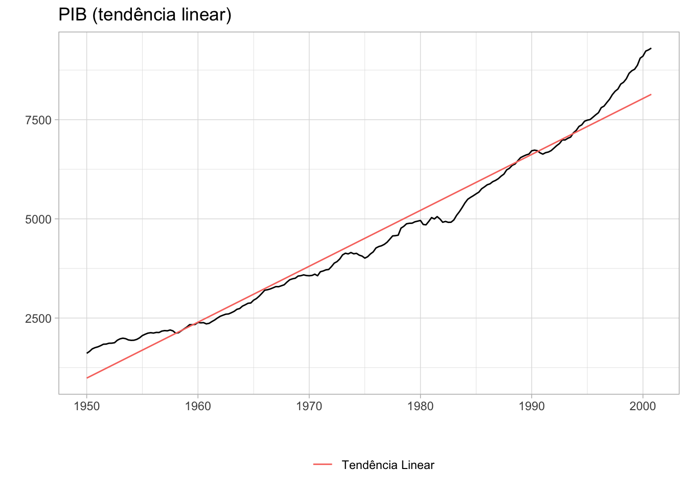
Parte do motivo de se estimar uma tendência para a série é para poder removê-la da série original. Isto é, queremos fazer
onde \(y_{t}^{\text{detrend}}\) é a série sem tendência. Isto é particularmente útil quando estamos lidando com séries “tendência-estacionárias”, i.e., séries que se tornam estacionárias quando subtraímos a sua tendência. No caso da série do PIB há algum debate sobre como torná-la estacionária. Em geral, é mais comum tratá-la como “diferença-estacionária” e tirar a primeira diferença da série (implicitamente assumindo que ela possui uma raiz unitária). Contudo, há alguma evidência de que a série possa ser “tendência-estacionária” quando se considera uma tendência com quebra.
De qualquer forma, para este modelo simples podemos facilmente computar a série sem tendência. Visualmente, a série não parece estacionária, mas seria necessário fazer algum teste formal para concluir isto com mais certeza.
Code
detrend <- gdp -fitted(fit)autoplot(detrend) +theme_light()
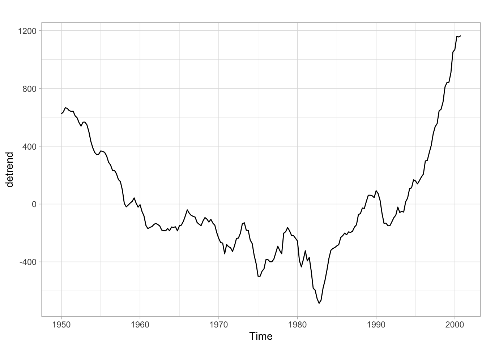
Exemplo: Tendências polinomiais (ordens mais altas)
Uma forma de estender o modelo acima é considerar ordens polinomiais mais elevadas. De forma geral, o modelo teria a seguinte forma:
Como se vê no gráfico, a tendência cúbica oferece uma aproximação melhor da série original, contudo, há motivos para ter cuidado com este tipo de modelo. À medida que se aumenta a ordem do polinômio, o ajuste da tendência vai progressivamente melhorando. Isto é problemático por pelo menos três motivos:
(1) enquanto talvez exista algum argumento que justifique uma tendência cúbica nos dados do PIB, é difícil imaginar algum para explicar por que o PIB exibe uma tendência polinomial de ordem 10, 17, 21, etc;
(2) ordens altas geralmente implicam num sobreajuste dos dados, isto é, o modelo vai se tornar muito bom em explicar o conjunto atual de dados, mas será péssimo para fazer previsões;
(3) cada parâmetro do modelo é estimado com algum erro, então quanto mais parâmetros forem incluídos no modelo, maior será este erro.
O gráfico abaixo mostra o ajuste com polinômios de ordens diferentes. Note como as tendências com ordens de polinômios mais elevados apresentam um ajuste melhor aos dados. Isto é especialmente verdadeiro no começo e no final da série.
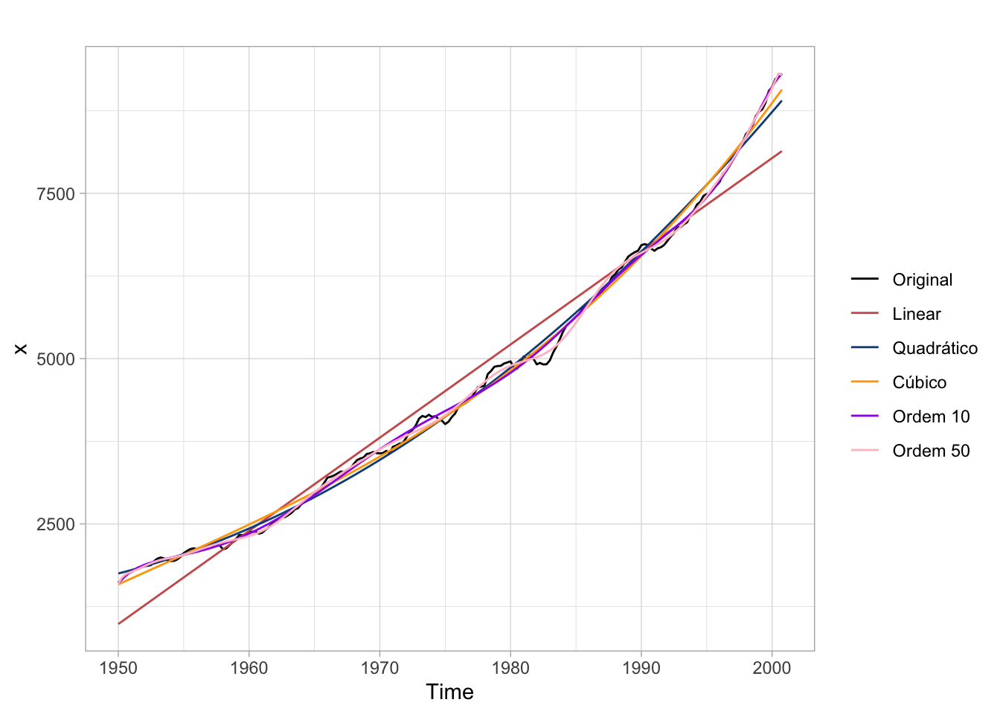
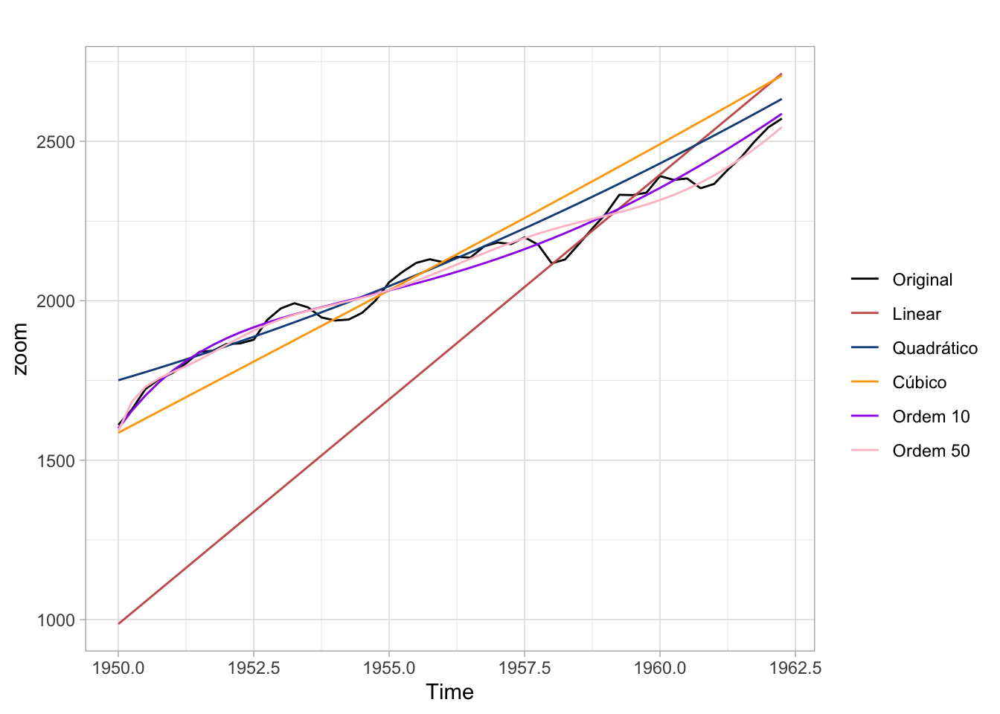
Exemplo: tendência e sazonalidade (aditiva) na produção industrial
O código abaixo estima um modelo como da equação acima para o índice de produção industrial mensal do FED. Os resultados estão apresentados na tabela. A regressão encontra efeitos significativos e positivos para os meses de junho, setembro e outubro.
Code
data(prodn)fit <-tslm(prodn ~ trend + season)
Dependent variable:
Production
Trend
0.291***
(0.003)
Feb
1.806
(1.610)
Mar
2.128
(1.610)
Apr
1.950
(1.610)
May
1.936
(1.610)
Jun
3.649**
(1.610)
Jul
-1.429
(1.610)
Aug
1.776
(1.611)
Sep
4.105**
(1.611)
Oct
4.208***
(1.611)
Nov
2.294
(1.611)
Dec
-0.320
(1.611)
Intercept
28.727***
(1.266)
Observations
372
R2
0.962
Adjusted R2
0.961
Residual Std. Error
6.340 (df = 359)
F Statistic
755.242*** (df = 12; 359)
Note:
p<0.1; p<0.05; p<0.01
Ao visualizar o ajuste dos dados vê-se também a limitação desta abordagem. Implicitamente se assume que o efeito sazonal é sempre o mesmo.
Outra opção seria utilizar uma média móvel para estimar o componente de tendência da série. Uma média móvel calcula uma média dos valores da série em janelas de tempo:
Agora faz-se uma regressão sobre a série sem tendência. Da mesma forma como o modelo anterior, a sazonalidade é sempre igual ao longo do tempo então apresento apenas dois “ciclos” do ajuste.
Este tipo de decomposição também é conhecida como “decomposição clássica”. Apesar de simples e intuitiva, ela pode ser inadequada. Um tipo de decomposição mais sofisticada é a STL (Seasonal Decomposition of Time Series by Loess) que permite maior flexibilidade tanto na tendência como na sazonalidade, além de ser mais robusta a outliers.
Uma especificação bastante comum é descrever o comportamento de uma variável em função de seus valores passados. Isto pode refletir, por exemplo, algum componente inercial nos dados em que o valor da inflação do mês de outubro está correlacionada ao valor da inflação no mês de setembro. Também é possível estender este modelo incluindo os valores contemporâneos e defasados de outras variáveis. Pode-se especular, por exemplo, que o desempenho das vendas de um setor seja função da renda no mesmo período (mês, trimestre, etc.) e em períodos anteriores. Ou seja, queremos “explicar” a série \(y\) em função de seus valores passados (\(y_{t-1}, y_{t-2}, \dots\)) e dos valores contemporâneos e passados de outras séries (\(x_{t-1}, z_{t-1}, \dots\)).
Exemplo simples
Um modelo para explicar \(y\) em função de seu valor defasado em um período, do valor contemporâneo de \(x\) e do valor defasado de \(x\) em um período.
Note que o modelo acima não seria muito útil para gerar previsões de \(y_{t + 1}\) pois ele exigiria conhecimento de \(x_{t + 1}\). Então, seria necessário primeiro prever o valor de \(x_{t + 1}\) para computar uma estimativa para \(y_{t + 1}\).
Para o exemplo abaixo uso o pacote GetBCBData para carregar a série do Índice de Produção Industrial (IPI).
Code
# Baixa os dadosipi <-gbcbd_get_series(21859, first.date =as.Date("2002-01-01"))# Converte a série para tsprod <-ts(ipi$value, start =c(2002, 01), frequency =12)# Gráfico da sérieautoplot(prod) +labs(title ="Índice de Produção Industiral - geral (2012 = 100)") +theme_light()
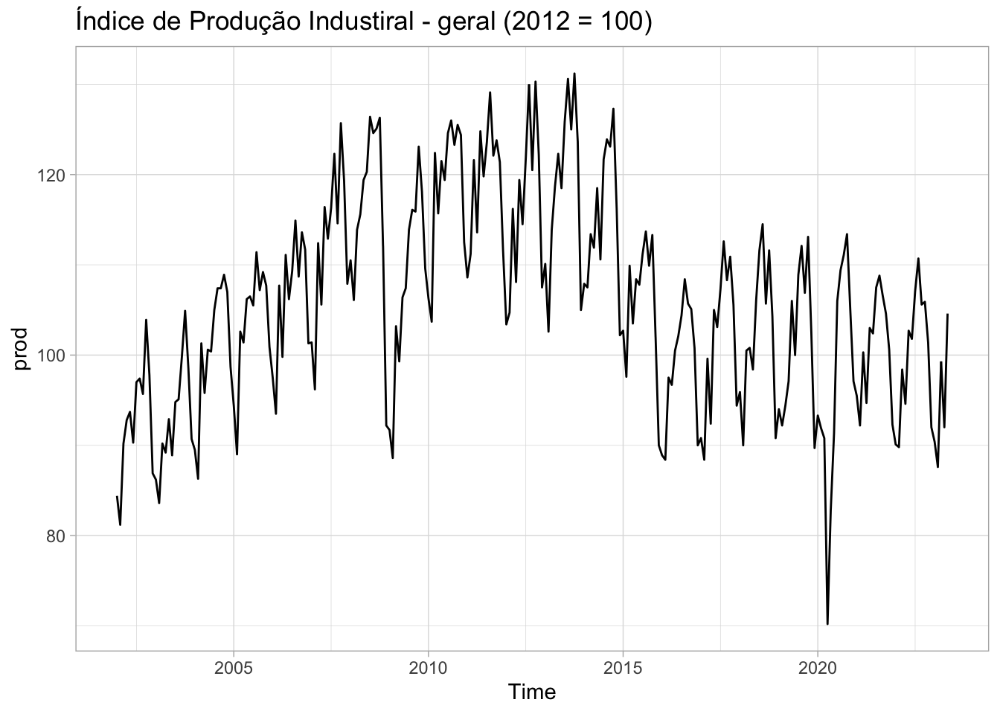
Pode-se visualizar a relação linear entre valores correntes e defasados do IPI usando a função lag.plot. Na imagem abaixo, cada quadrado mostra um gráfico de dispersão dos valores do IPI em \(t\) contra os valores do IPI em \(t-k\). Alguns lags parecem não exibir muita relação como o lag 6. Já o primeiro e último lag parecem apresentar uma relação linear mais acentuada.
Como exemplo, podemos propor o modelo abaixo para o IPI. A escolha dos lags aqui foi um tanto arbitrária e há métodos mais apropriados para escolhê-los.
Para estimar este modelo no R há um pequeno inconveniente da função lag que, na verdade, funciona como um operador foreward. Além disso, agora a função base lm (e por conseguinte, também a função tslm) se prova um tanto inconveniente, pois ela não funciona bem com variáveis defasadas. Para usar a função lm seria necessário primeiro “emparelhar” as diferentes defasagens da série, isto é, seria necessário criar um data.frame (ou ts) em que cada coluna mostra os valores das defasagens escolhidas. Por motivo de completude, deixo um código de exemplo que faz isto. Na prática, vale mais a pena escolher alguma outra função como dynlm::dynlm ou dyn::dyn$lm. O código abaixo usa o forecast::tslm, mas nos exemplos seguintes uso o dyn::dyn$lm.
Pode-se contornar o problema da função lag definindo uma nova função, L, que funciona da maneira desejada. O código abaixo estima a regressão usando dyn::dyn$lm. A sintaxe dentro da função é praticamente idêntica à que vimos acima com as funções lm e tslm.
Os resultados da regressão acima estão resumidos na tabela abaixo.
Dependent variable:
ipi
ipi [1]
0.442***
(0.056)
ipi [4]
0.139**
(0.062)
ipi [8]
-0.114***
(0.042)
ipi [12]
0.446***
(0.040)
constante
9.478**
(3.960)
Observations
245
R2
0.783
Adjusted R2
0.779
Residual Std. Error
5.304 (df = 240)
F Statistic
216.286*** (df = 4; 240)
Note:
p<0.1; p<0.05; p<0.01
Podemos combinar a informação de outros indicadores industriais para adicionar informação potencialmente relevante para nossa regressão. Neste exemplo, uso outros indicadores industriais para encontrar aqueles que “ajudam a explicar” o indicador geral.
O código abaixo importa uma série de indicadores industriais e junta todos eles num único objeto ts.
# Codigos das series do BACENcodigos_series =c(21859, 21861:21868)# Vetor com nomes para facilitar o uso dos dadosnomes =c("geral", "extrativa_mineral", "transformacao", "capital", "intermediarios","consumo", "consumo_duraveis", "semiduraveis_e_nao_duraveis","insumos_da_construcao_civil" )# Junta estes dados num data.frame que serve de dicionário (metadata)dicionario <-data.frame(id.num = codigos_series, nome_serie = nomes)# Baixa todas as seriesseries <-gbcbd_get_series(codigos_series, first.date =as.Date("2002-01-01"))# Junta as séries com o dicionárioseries <-merge(series, dicionario, by ="id.num")# Converte para wide usando os nomes do dicionario como nome das colunasseries_wide <- reshape2::dcast(series, ref.date ~ nome_serie, value.var ="value")# Convert para tsseries <-ts(as.matrix(series_wide[, -1]), start =c(2002, 1), frequency =12)# Visualizar todas as seriesautoplot(series) +facet_wrap(vars(series)) +scale_color_viridis_d() +theme_light() +theme(legend.position ="none")
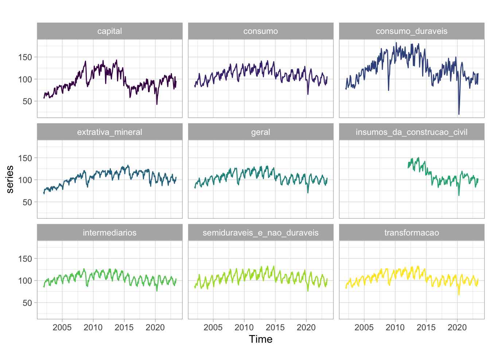
Feito o trabalho de importação dos dados podemos propor um modelo simples que toma o valor defasado das variáveis. Novamente a escolha das defasagens e dos regressores foi completamente arbitrária. O modelo estimado usa defasagens de outras séries para modelar o comportamento da série do índice de produção da indústria de tranformação
Olhando apenas para as observações mais recentes vemos que, com exceção do período da pandemia, o ajuste aos dados é relativamente satisfatório.
Code
# Filtra apenas as observações mais recentes, após jan/2015prod_recente <-window(prod, start =c(2015, 1))# Reestima o modelosummary(fit <-tslm(prod_recente ~ trend + season))
Na análise de sazonalidade já lidamos com dummies, mas vale a pena discutí-las num contexto mais amplo. Pode-se usar variáveis dummy para estimar o efeito de certos eventos extraordinários (greves, atentados, crise externa, etc.) ou mesmo o efeito de eventos recorrentes e previsíveis (feriados, dias úteis, alguma estação do ano, etc.).
Exemplo: Efeito de greves e preços administrados no IPCA
Na tabela abaixo omito os interceptos das dummies sazonais
Dependent variable:
IPCA
ipca [1]
0.508***
(0.061)
Greve (2018)
1.039***
(0.206)
Greve (2013)
-0.390*
(0.206)
Preços adm
0.212*
(0.109)
constante
0.108
(0.071)
Constant
0.256***
(0.063)
Observations
192
R2
0.517
Adjusted R2
0.476
Residual Std. Error
0.199 (df = 176)
F Statistic
12.567*** (df = 15; 176)
Note:
p<0.1; p<0.05; p<0.01
Previsão (alguns problemas)
Modelos de regressão linear podem também ser usados para fazer previsões. A princípio os valores futuros de uma série podem ser computados usando os valores estimados dos \(\beta_{i}\). Num modelo linear de \(y_{t}\) em função de \(k\) séries de tempo, como o abaixo, podemos calcular o valor de \(\hat{y_{t}}\)
contudo, o valor de \(y_{t + 1}\) exige o conhecimento do valor de todas as \(k\) séries em \(t+1\). O mesmo vale quando usamos variáveis defasadas como regressores. Há diversas formas de resolver este problema. Uma solução simples seria tomar o valor médio dos regressores para formar as previsões. Outra solução seria propor modelos ARMA simples para cada uma das séries \(x_{k, t}\) e usar estas previsões dentro do modelo linear para \(y_{t}\). Alternativamente, pode-se também montar cenários futuros hipotéticos definindo valores pré-estabelecidos para as variáveis regressoras.
Há também alguns casos mais simples, em que o valor futuro das variáveis regressoras é conhecido. Por exemplo, pode-se modelar a demanda por energia elétrica numa região como função de uma dummy de estação (verão x não-verão) e de dia útil (dia útil x dia não-útil). É bastante simples fazer previsões futuras neste caso pois sabe-se de antemão todos os valores futuros das séries que se está usando para “explicar” a demanda por energia elétrica. Já se o mesmo modelo considerasse também o PIB desta região como variável na regressão, seria mais complexo prever os valores futuros da demanda por energia, pois seria necessário saber também os valores futuros do PIB.
Exemplo: tendência e sazonalidade
É relativamente simples prever os valores futuros de modelos de tendência e sazonalidade determinísticas. Como o adjetivo “determinístico” sugere sabe-se de antemão todos os valores que esta série vai exibir. O exemplo abaixo estima um modelo simples para a demanda por passagens aéreas (voos internacionais).
Vale notar que não se costuma fazer previsões de longo prazo com este tipo de modelo, pois a hipótese de que a sazonalidade/tendência continua exatamente igual ao longo do tempo vai se tornando cada vez mais frágil. A curto prazo, contudo, pode ser razoável supor que este modelo linear simples ofereça uma boa aproximação da realidade.
Code
fit <-tslm(AirPassengers ~ trend + season)autoplot(forecast(fit, h =24), include =24) +theme_light()
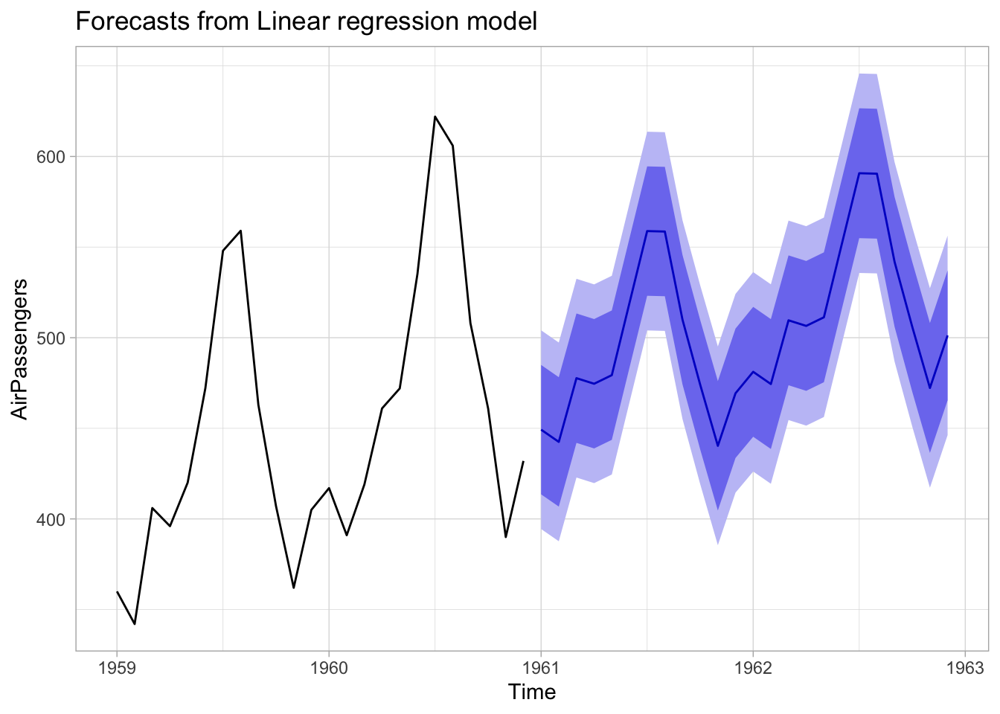
Exemplo: previsão de cenário
No caso da regressão acima do IPCA, pode-se estimar o impacto de uma nova greve dos caminhoneiros. [Mal sabiamos que em 2020 teriamos um evento extraordinário…].
Pode ser um tanto difícil fazer previsões com modelos que usam informação de outras séries. Num modelo simples como \(y_{t} = \beta_{0} + \beta_{1}x_{t - 1}\) para prever valores futuros de \(y_{t}\) é preciso fazer previsõs para a série \(x_{t}\), pois, \(y_{t + 2}\) é função linear de \(x_{t + 1}\). Há muitas maneiras de abordar este problema e eu provavelmente vou discutir mais sobre as alternativas num post futuro. O exemplo abaixo mostra como usar informação disponível de outras séries
autoplot(forecast(fit, sub), include =36) +theme_light()
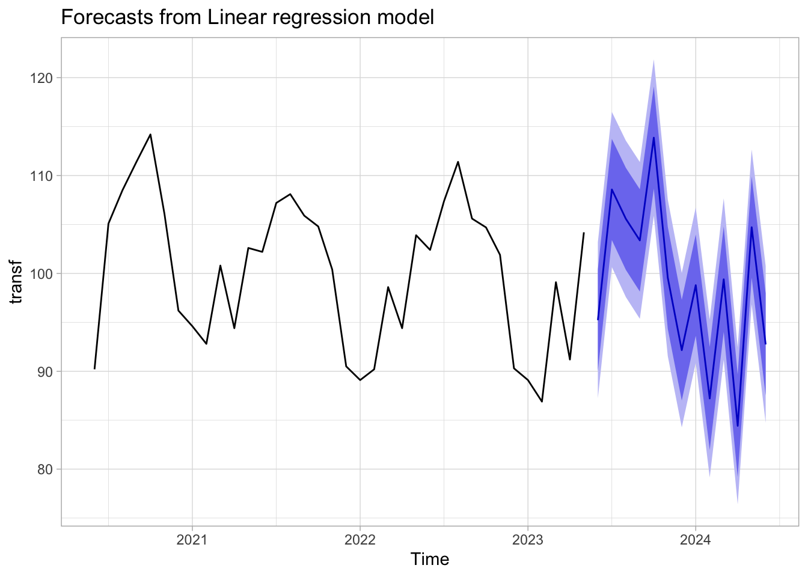
Pode-se, como de costume, separar os dados em train e test para avaliar a qualidade das previsões dentro da amostra.
Conclusões
Modelos linares podem ser bastante úteis na análise de séries de tempo. Neste post, discuti brevemente a aplicação destes modelos num contexto de decomposição clássica, análise de regressão e de previsão. Há muitos aspectos interessantes que ainda podem ser explorados.
[Como comentei no início do post, este texto foi originalmente escrito no início de 2019. De lá pra cá muitas coisas mudaram, mas acredito que a informação aqui continua sendo bastante útil. Talvez no futuro eu reescreva este post utilizando somente o pacote forecast e mostrando algumas maneiras mais simples de montar o código, evitando a multiplicidade de objetos ts, xts, etc.]